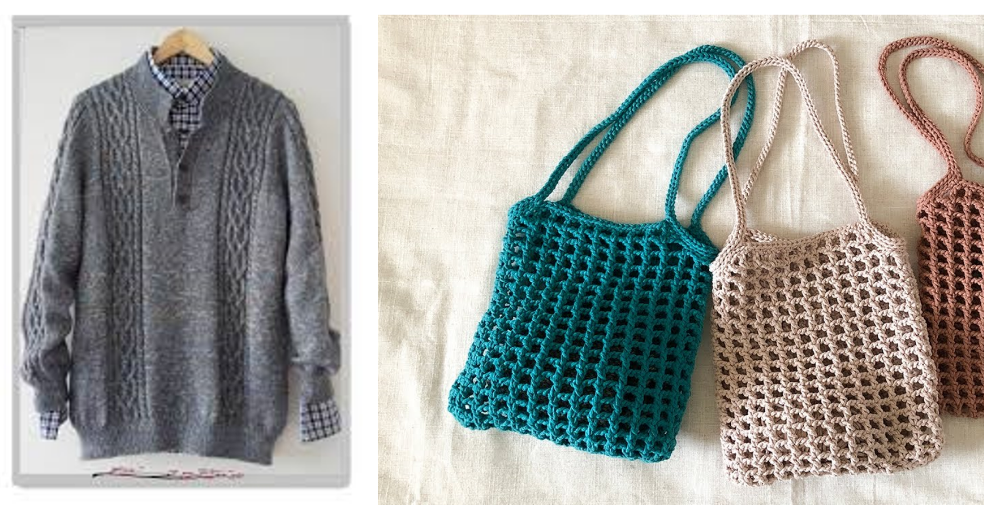

結果:棒針鉤針都適合你學噢
一般來說鉤針對於新手比較好上手，作品可以非常多元，常常看到的包包、吊飾、披肩、髮帶，都是鉤針做的噢!
市面上販售的很多毛衣、圍巾，很多都是用棒針的手法，因為織物會較輕薄。鉤針在編織時需捲線，線的厚度就會比較多層，因此若是用保暖性較好的毛線編織，棒針會比較好~除此之外棒針也能織一些可愛的娃娃，不過複雜度會比鉤針高，這點柏寬先生也可以列入考量!
說這麼多，最後還是要靠柏寬先生決定啦!可以參考上面的說明做取捨，有進一步的問題也可以再問怡賢噢( ^ω^)

再測一次